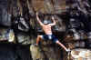

By Lee Skidmore, November 1999
Last updated 24 March, 2000

| Sunshine Coast Climbing Guide |
By Lee Skidmore, November 1999 Last updated 24 March, 2000 |
|
|
|
| SUNSHINE COAST CLIMBING AREAS | |
| Noosa National Park | North Sunshine Beach |
|
Where is it? |
 |
|
Above: Lee bouldering in Noosa National Park |
The climbing
As far as I'm aware, there are no real, established routes (bolting is not
permitted, and the rock is iffy anyway), but there are plenty of hard, overhung boulder
problems. You could top rope if you really wanted to I suppose. It's also a great place to go due to the excellent swimming and snorkelling available a stones throw from the crag.
These areas are two successive headlands which lie on the other (southern) side of Noosa National Park. They are marked on all the decent road maps, so are easy to find. You wouldn't want to walk around the entire headland to get to them, so drive to the suburb of Sunshine Beach, park as far north on the beachfront as possible, and walk along the beach up north.
More than 20 routes were established
here in the early 90s. This is all the information I have been able to gather. More would be appreciated.
Cooks County
- Mike and the Mechanic (21)
- Cardiac Arête (19)
- Pipeline (16)
- Mambo Man (21)
Next Headland North
This cliff has an abseil approach.
- Grinning, Greased and Gassed (15)
- Fait Accompli (17)
- Sanctimonious Civil Servants (20)

{kind=link}